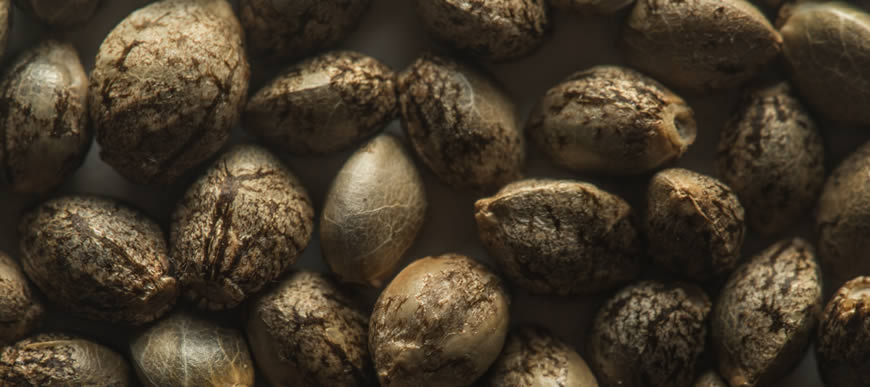

Catalogo de Semillas

Semillas CBD
El mercado demanda semillas de marihuana con alto contenido en cannabidiol (CBD) cuyas virtudes terapéuticas den respuesta a problemas como el insomnio, los dolores musculares, la anorexia o la depresión, entre otros. Además, a nivel recreativo, las semillas de marihuana ricas en CBD permiten que las personas con baja tolerancia al potente efecto de ciertas variedades de marihuana puedan disfrutar de sensaciones suaves y moderadas.
Semillas THC
Las semillas de marihuana feminizadas irrumpen en el mercado cannábico en el año 1998. Su aparición supuso una auténtica revolución porque contienen cromosomas exclusivamente femeninos (XX) y está garantizada casi al 100% la producción de plantas hembra que son las que producen los cogollos que tanto nos gustan. En un principio los cannabicultores mostraron ciertas reticencias porque pensaban que estas semillas no tendrían el potencial genético de las versiones regulares. Pero en cuanto empezaron a experimentar con ellas fueron conscientes de su enorme valor, de las ventajas de cultivarlas y de que sus rasgos estaban a la altura de las genéticas originales. Hoy en día nadie pone en duda que se trata de una alternativa muy favorable que facilita el cultivo, agiliza el proceso y evita perdidas de espacio, de tiempo y de dinero
Semillas Auto-Florecientes
En Dinafem Seeds empezamos a experimentar con las semillas de marihuana autoflorecientes en el año 2008 a pesar de que en ese momento no eran unas semillas demasiado conocidas y demandadas en el mercado. Una vez más fuimos pioneros y en cuanto realizamos las primeras pruebas tuvimos clarísimo que se trataba de una opción con un gran potencial y que supondría un importante avance para los cannabicultores que se enfrentaban a entornos climáticos duros, a veranos fríos y cortos, etc. A partir de ese momento se abre la puerta a un segmento de cannabicultores que jamás se hubiese podido plantear el cultivo de marihuana en exterior.